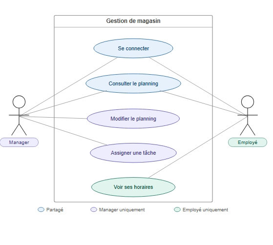

Projet
AppAction
Cahier des charges d une application de gestion de magasin sans emoji.
Description
Contexte : projet realise en stage ou alternance pour centraliser les operations internes d un magasin.
- Objectifs : gestion des employes et plannings, suivi des conges et absences, acces securise aux fiches de paie, automatisation des regles metier.
- Utilisateurs : employe, manager, RH, administrateur.
- Fonctionnalites : authentification securisee, gestion des plannings, gestion des conges, fiches de paie, gestion des taches, interface par role.
- Technologies : React, API REST, Sequelize, Docker.
- Contraintes : 5 jours travailles maximum par semaine, respect des contrats, RBAC, securisation des donnees sensibles.
Supports visuels
- Image de presentation : GestionMagasinAppAction.jpeg.
- Modele de base de donnees Looping : ActionBdd (1).loo.